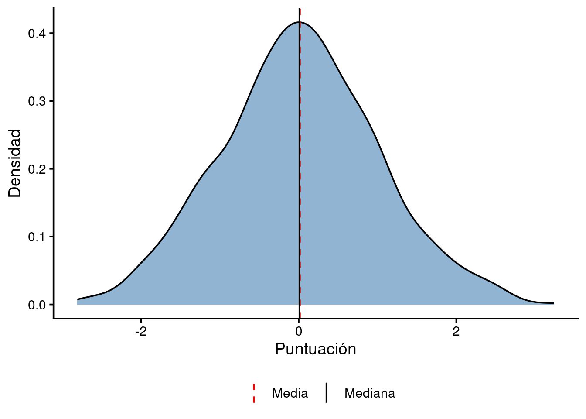
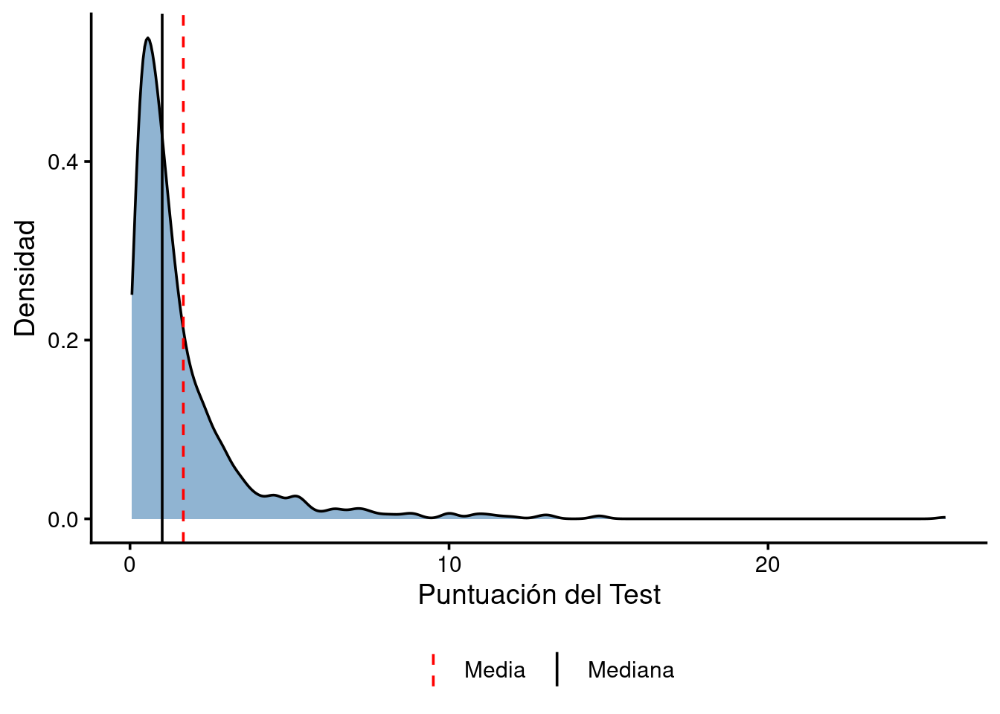

En el arsenal de cualquier psicólogo o investigador, la Distribución Normal (o de Gauss) es el martillo. Y para un martillo, todos los problemas parecen clavos. Sin embargo, la realidad de los fenómenos humanos es mucho más compleja, rebelde y “extremista” de lo que esta distribución y cien años de tradición psicológica hacen creer.
La distribución de Gauss es una función matemática definida por dos parámetros: la media (\(\mu\)) y la desviación típica (\(\sigma\)). Su forma de campana es el símbolo de la estabilidad y está presente casi en cualquier libro de estadística y probabilidad que se coja.

¿Por qué se usa tanto? La respuesta corta es el Teorema del Límite Central (TLC). El TLC postula que cuando sumas muchas variables independientes y de varianza finita, la suma resultante tiende a la normalidad, sin importar la distribución original de esas variables.
En psicología, asumimos que un constructo como la “Inteligencia” es el resultado de miles de pequeños factores (genéticos, ambientales, nutricionales) sumándose entre sí. Por eso, esperamos que las puntuaciones se agrupen en el centro. Es cómoda, es elegante y, sobre todo, permite usar la estadística paramétrica (t-tests, ANOVA) que tanto nos gusta.
El problema surge cuando los factores no se suman, sino que se multiplican o interactúan de forma compleja. Gauss funciona bien para medir estaturas, donde es físicamente imposible que alguien mida 10 metros. Pero falla estrepitosamente en fenómenos donde un solo evento o individuo puede pesar más que toda la población junta.
Aquí es donde los límites de la normalidad se hacen evidentes: * Ignora los extremos: En una normal, un evento a 5 desviaciones típicas es prácticamente imposible * Asume independencia: Asume que lo que le pasa a un sujeto no afecta al resto
Frente a la campana de Gauss aparece la Ley de Potencia. Si la normal es la distribución de la “mediocridad” (en el sentido estadístico de estar en la media), la ley de potencia es la distribución de los extremos.
Se define matemáticamente como \(P(x) \propto x^{-\alpha}\). En este mundo, no hay un “valor típico”. Muchos fenómenos naturales y sociales siguen este patrón: * Terremotos: Hay miles de microseísmos diarios, pero la energía de un solo terremoto de escala 9.0 puede superar a todos los demás combinados * Víctimas de guerra: La mayoría de los conflictos tienen pocas víctimas, pero unos pocos (como las Guerras Mundiales) concentran la gran mayoría de la mortalidad histórica * Riqueza: El famoso principio de Pareto (el 80/20).
En estos casos, la media no sirve para nada. Si Bill Gates entra en un bar, la “riqueza media” de los clientes sube a mil millones de dólares, pero esa cifra no describe a nadie en el bar.
Cómo conectamos esto con un test psicológico? A través de la distribución Log-Normal. Esta ocurre cuando el logaritmo de una variable sigue una distribución normal. Es el resultado de procesos multiplicativos.
En la evaluación conductual (como tiempos de reacción o escalas de síntomas), los datos suelen presentar una asimetría positiva clara: mucha gente con puntuaciones bajas y unos pocos con puntuaciones altísimas.

Si estás evaluando la eficacia de un tratamiento o la distribución de una patología en una población y asumes normalidad cuando hay una ley de potencia o log-normalidad: * Diagnosticarás erróneamente: Al usar el punto de corte basado en desviaciones típicas (\(\mu \pm 2\sigma\)), estarás sobrestimando o subestimando la rareza de un caso clínico. * Perderás poder predictivo: Los modelos lineales (regresiones) se verán sesgados por la cola larga, intentando ajustar la línea a valores extremos que no son errores, sino parte esencial de la distribución. * Validez de Contenido: Si un test de depresión muestra una distribución de ley de potencia, quizás es que la depresión no es un rasgo continuo en la población, sino un sistema complejo donde los síntomas se retroalimentan (efecto bola de nieve).
Como investigadores, debemos ser valientes. Si tus datos muestran una cola larga, no intentes “normalizarlos” a la fuerza. Esa asimetría es la huella digital de la complejidad del comportamiento humano. Menos Gauss y más Pareto para una psicología que quiera entender de verdad los casos extremos.